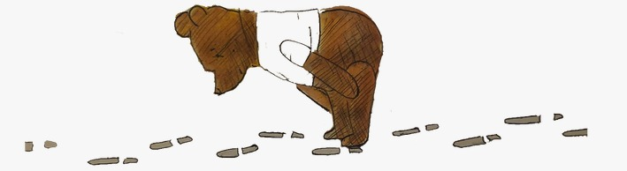

Zoals ik dus zei, weet ik nog niet of ik wil bloggen. Dus deze pagina is zo leeg als het maar kan.
Maar dat weerhoudt me er niet van om een beetje rond te spelen met de CSS code.
Iedere drie seconden verschijnt er een nieuwe zin/paragraaf/foto.
Of misschien een link naar
een andere pagina. Geen zorgen ik ga je niet rickrollen.
En de links openen in een ander tabblad, dus je kan ze aanklikken zonder deze pagina te sluiten.
En zo kan je zonder zorgen verder lezen op dit tabblad.
Een aantal pagina's op deze website verschijnen ook in deze feed.
Dus als je iets hebt gemist verschijnt het waarschijnlijk hier.
...
...
Het afgelopen jaar ben ik beziggeweest met HTML/CSS leren.
Dat is best wel een uitdaging als je dat nooit eerder hebt gedaan.
Maar ik voel veel voor interactieve media/fictie.
In mijn hoofd is het de toekomst van de literatuur.
Ik geloof niet dat boeken zullen verdwijnen, maar je moet ook naar de toekomst kijken.
En niet naar de grond.

...
...
Ik ben ook veel bezig geweest met ouder worden.
Dat komt doordat ik geloof veel tijd te hebben verspild.
Tenminste, dat denk ik.
Daarom zocht ik laatst op hoe lang ik nog te leven zou hebben.
Volgens één website nog zo lang:
Mijn dagen zijn dus geteld.
Door een computer.
...
...
Vroeger was ik geobsedeerd met het idee dat het universum pas een seconde zou bestaan.
Dat alles perfect op zijn plaats is gevallen.
En ik pas een seconde leef.
En alles één groot toeval is geweest.
...
Toen ging ik filosofie studeren.
...
...
Je kan jezelf digitaal ouder maken.
Dit ben ik over vijftig jaar.
Ik heb zelfs
een overlijdensbericht geschreven.
En daaronder staat een stuk uit een brief die ik schreef.
Het gaat over voorspellingen.
...
...
Ik heb voor mijn oriëntatie ook een game gemaakt.
Hij is niet heel lang.
Maar er zit ook geen einde aan.
Ik laat je wel even spelen.
...
...
...
Ik weet niet waarom ik hem er niet eerder in heb gezet.
Misschien omdat hij ook niet echt 'af' is.
Al is dat nu juist het punt.
...
Maar ja.
Er zijn nog een boel andere dingen te vinden op de website.
Maar dit is een beetje de rode draad van de website.
Interactie, Jacob, games..
...
Ik zou willen dat ik je gedachten kon lezen.
Gewoon om te weten wat je van de website vindt.
...
Ik ben ook benieuwd wie dit moet nakijken.
Ik hoop niet Hanan, want zij heeft net een boek gepubliceerd.
Dan verdien je wel wat rust.
En als het wel Hanan is: bedankt.
...
Misschien Bert.
Of Dennis.
...
Misschien is Lauren dit wel aan het spelen, want ik ga haar dit zeker laten zien.
Bedankt voor de samenwerking Lauren.
En bedankt aan degene die dit nakijkt.
...
Bedankt freecodecamp.org voor de HTML lessen.
Bedankt voor je geduld.
Ik ben blij dat je er nog bent.
...
Ik ben blij dat je er nog bent.
Ik ben blij dat je er nog bent.
Ik ben blij dat je er nog bent.
Ik ben blij dat je er nog bent.
Ik ben blij dat je er nog bent.
Ik ben blij dat je er nog bent.
Ik ben blij dat je er nog bent.